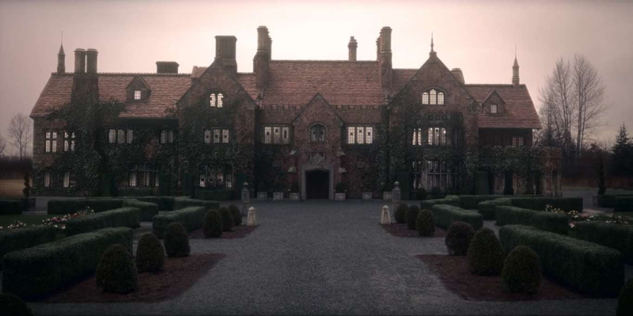

Basada mayormente en la novela “The Turn of the Screw”, también conocida como “Otra Vuelta de Tuerca”, de Henry James,
y otras obras literarias del mismo autor: "La Maldicion de Bly Manor" trata de una joven maestra que fue contratada por un hombre
para cuidar de sus sobrinos en la casa de campo de la familia. Al llegar a Bly Manor se encuentra con los fantasmas que atormentan el lugar

“…se juntan las historias personales de corazones rotos de cada uno de los protagonistas, todos provenientes de orígenes distintos…”
- Cintilatio
“…cuando al final todo termina de encajar y la serie cierra con broche de oro, «esta no es una historia de fantasmas, es una historia de amor».”
- El Espectador Imaginario
“…la serie opta por un ritmo sosegado que recuerda más a un tipo de cine de terror poco habitual en la actualidad pero sin una pretensión de darle un toque más moderno.”
- Espinof